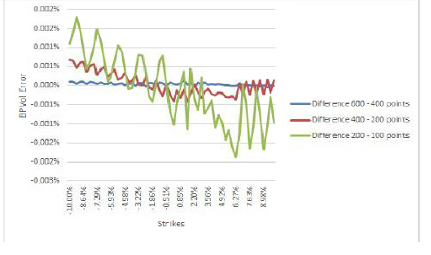

1.7.1.4.1.7. Risk Analysis#
1.7.1.4.1.7.1. Comprehensive GSABR Risk Management Framework#

1.7.1.4.1.7.1.1. 🎯 Enterprise Risk Management Overview#
The GSABR Risk Analysis Framework delivers institutional-grade risk assessment capabilities specifically designed for interest rate volatility modeling and options portfolios. Our comprehensive system provides sophisticated risk calculation capabilities through both analytical derivatives and numerical finite difference methods, supporting traditional risk metrics and advanced scenario analysis for institutional trading operations.
1.7.1.4.1.7.1.2. 🛡️ Advanced Risk Calculation Architecture#
1.7.1.4.1.7.1.2.1. 📊 Dual-Method Risk Framework#
Method |
Approach |
Accuracy |
Performance |
Use Case |
|---|---|---|---|---|
Analytical Derivatives |
Closed-form mathematical solutions |
Exact |
Ultra-fast |
Real-time trading |
Numerical Finite Difference |
Advanced numerical approximation |
High precision |
Optimized |
Complex scenarios |
The framework supports traditional risk metrics and advanced scenario analysis, providing comprehensive coverage for institutional risk management requirements.
1.7.1.4.1.7.1.3. 🎛️ Advanced Risk Factor Identification Framework#

1.7.1.4.1.7.1.3.1. 📊 Comprehensive Risk Factor Specification#
The GSABR Beta Mixture model employs sophisticated local volatility parameters providing granular risk attribution and comprehensive sensitivity analysis:
Risk Factor |
Symbol |
Risk Type |
Market Impact |
Hedging Strategy |
Typical Range |
|---|---|---|---|---|---|
Overall Smile Level |
\(\alpha\) |
Primary volatility |
Global vol exposure |
Direct vol hedging |
0.1 - 2.0 |
ATM Skew Control |
\(\beta_1\) |
Skew risk |
Risk reversal sensitivity |
Skew-specific trades |
-2.0 to +2.0 |
High Strike Skew |
\(\beta_2\) |
Wing risk |
OTM call exposure |
Wing spread strategies |
-1.0 to +1.0 |
Correlation |
\(\rho\) |
Correlation risk |
Vol-rate correlation |
Delta hedging efficiency |
-0.99 to +0.99 |
Vol of Vol |
\(\nu\) |
Second-order vol |
Vega convexity |
Volatility of volatility trades |
0.01 - 1.0 |
Left Volatility Level |
\(v_L\) |
Downside risk |
Put wing behavior |
Downside protection |
0.05 - 0.5 |
Speed Parameter |
\(d\) |
Transition risk |
Regime switching |
Local volatility precision |
0.1 - 10.0 |
1.7.1.4.1.7.1.3.2. 🔧 Advanced Sensitivity Calculation Framework#
namespace xsigma::sabr {
/**
* @brief Comprehensive GSABR risk calculation engine
*
* This advanced risk framework provides institutional-grade sensitivity
* analysis with both analytical and numerical methods for complete
* risk attribution and sophisticated hedging strategies.
*/
class GSABRRiskEngine {
public:
// Primary risk metrics calculation
struct RiskMetrics {
double delta; // Price sensitivity to underlying
double gamma; // Second-order underlying sensitivity
double vega_alpha; // Sensitivity to overall volatility level
double vega_beta1; // Sensitivity to ATM skew parameter
double vega_beta2; // Sensitivity to high strike skew
double vega_rho; // Sensitivity to correlation parameter
double vega_nu; // Sensitivity to vol of vol parameter
double vega_vL; // Sensitivity to left volatility level
double vega_d; // Sensitivity to speed parameter
// Advanced risk metrics
double volga; // Vega convexity (second-order vol risk)
double vanna; // Cross-gamma (delta-vega sensitivity)
double charm; // Delta decay (time-delta sensitivity)
};
/**
* @brief Calculate comprehensive risk metrics for GSABR options
*
* The model calculates sensitivity of option prices to all parameters
* with comprehensive testing and validation for institutional risk management.
*/
RiskMetrics calculateRiskMetrics(
const GSABROption& option,
const GSABRBetaMixtureParameters& params,
const MarketData& market) const;
};
}
The model provides comprehensive coverage of the implied volatility smile and risks associated with all GSABR parameters, with detailed testing and validation procedures outlined in subsequent sections.
Ce framework de calcul des risques avancé permet une attribution granulaire des risques et des stratégies de couverture sophistiquées pour la gestion institutionnelle des portefeuilles d’options sur taux d’intérêt.
1.7.1.4.1.7.2. Sensitivity Analysis#
1.7.1.4.1.7.2.1. GSABR Beta Mixture Parameters#
The purpose of this test is to examine the effect of the parameters \(\alpha\), \(\beta_1\), \(\beta_2\), \(\rho\), \(\nu\), and the speed “d” on the implied volatility smile.
1.7.1.4.1.7.2.1.1. Parameter Impact Analysis#
Alpha (\(\alpha\)) Sensitivity:
Controls the overall level of the volatility smile
Linear impact on all strikes
Primary calibration parameter for ATM volatility matching
Beta (\(\beta_1\), \(\beta_2\)) Sensitivity:
\(\beta_1\) controls the ATM skew behavior
\(\beta_2\) controls the high-strike wing behavior
Non-linear interaction between the two parameters
Rho (\(\rho\)) Sensitivity:
Controls the correlation between forward rate and volatility
Affects the asymmetry of the volatility smile
Particularly important for out-of-the-money options
Nu (\(\nu\)) Sensitivity:
Volatility of volatility parameter
Controls the convexity of the volatility smile
Critical for fitting market volatility surfaces
Speed Parameter (\(d\)) Sensitivity:
Controls the transition speed between different volatility regimes
Affects the smoothness of the local volatility function
Important for numerical stability
1.7.1.4.1.7.2.2. Risk Metrics Framework#
1.7.1.4.1.7.2.2.1. Traditional Greeks#
Greek |
Formula |
Description |
|---|---|---|
Delta |
\(\frac{\partial V}{\partial F}\) |
Forward rate sensitivity |
Gamma |
\(\frac{\partial^2 V}{\partial F^2}\) |
Convexity of delta |
Vega |
\(\frac{\partial V}{\partial \sigma}\) |
Volatility sensitivity |
Theta |
\(\frac{\partial V}{\partial t}\) |
Time decay |
1.7.1.4.1.7.2.2.2. SABR-Specific Sensitivities#
Sensitivity |
Formula |
Description |
|---|---|---|
Alpha Vega |
\(\frac{\partial V}{\partial \alpha}\) |
Overall volatility level |
Beta Sensitivity |
\(\frac{\partial V}{\partial \beta}\) |
CEV exponent sensitivity |
Rho Sensitivity |
\(\frac{\partial V}{\partial \rho}\) |
Correlation sensitivity |
Nu Sensitivity |
\(\frac{\partial V}{\partial \nu}\) |
Vol-of-vol sensitivity |
1.7.1.4.1.7.2.3. Advanced Risk Analysis#
1.7.1.4.1.7.2.3.1. Scenario Analysis#
Parallel Shifts: Uniform changes across all parameters
Twist Scenarios: Non-parallel changes in volatility surface
Stress Testing: Extreme market condition analysis
1.7.1.4.1.7.2.3.2. Model Risk Assessment#
Parameter Stability: Sensitivity to calibration changes
Extrapolation Risk: Behavior outside calibrated ranges
Numerical Risk: PDE discretization and convergence analysis
1.7.1.4.1.7.2.3.3. Cross-Model Validation#
SABR vs ZABR: Consistency between analytical and PDE approaches
Monte Carlo Validation: Comparison with simulation results
Market Benchmark: Validation against liquid market instruments
1.7.1.4.1.7.3. SABR Risk Calculation Implementation from Our Project#
Risk Calculation Infrastructure:
namespace xsigma {
// Risk calculation for SABR-based instruments
class sabr_risk_calculator {
public:
// Constructor
sabr_risk_calculator(
const ptr_const<volatility_model_sabr>& model,
double forward,
double expiry);
// Delta calculation (forward sensitivity)
double calculate_delta(
const ptr_const<instrument>& instrument,
double shift_size = 0.0001) const;
// Vega calculation (volatility sensitivity)
double calculate_vega(
const ptr_const<instrument>& instrument,
double vol_shift = 0.01) const;
// Gamma calculation (second-order forward sensitivity)
double calculate_gamma(
const ptr_const<instrument>& instrument,
double shift_size = 0.0001) const;
// Theta calculation (time decay)
double calculate_theta(
const ptr_const<instrument>& instrument,
double time_shift = 1.0/365.0) const;
// SABR parameter sensitivities
double calculate_alpha_sensitivity(
const ptr_const<instrument>& instrument,
double alpha_shift = 0.01) const;
double calculate_beta_sensitivity(
const ptr_const<instrument>& instrument,
double beta_shift = 0.01) const;
double calculate_rho_sensitivity(
const ptr_const<instrument>& instrument,
double rho_shift = 0.01) const;
double calculate_nu_sensitivity(
const ptr_const<instrument>& instrument,
double nu_shift = 0.01) const;
private:
ptr_const<volatility_model_sabr> model_;
double forward_;
double expiry_;
// Helper functions
double price_instrument(const ptr_const<instrument>& instrument) const;
ptr_const<volatility_model_sabr> create_shifted_model(
const sabr_parameters& shifted_params) const;
};
// SABR parameter structure
struct sabr_parameters {
double alpha;
double beta;
double rho;
double nu;
double shift;
};
// Implementation of SABR parameter sensitivity
double sabr_risk_calculator::calculate_alpha_sensitivity(
const ptr_const<instrument>& instrument,
double alpha_shift) const {
// Base price
double base_price = price_instrument(instrument);
// Create shifted parameters
sabr_parameters params_up = {
model_->alpha() + alpha_shift,
model_->beta(),
model_->rho(),
model_->vol_of_vol(),
model_->shift()
};
sabr_parameters params_down = {
model_->alpha() - alpha_shift,
model_->beta(),
model_->rho(),
model_->vol_of_vol(),
model_->shift()
};
// Create shifted models
auto model_up = create_shifted_model(params_up);
auto model_down = create_shifted_model(params_down);
// Calculate prices with shifted models
double price_up = price_with_model(instrument, model_up);
double price_down = price_with_model(instrument, model_down);
// Central difference approximation
return (price_up - price_down) / (2.0 * alpha_shift);
}
}
ZABR Risk Calculation:
namespace xsigma {
// Risk calculation for ZABR PDE models
class zabr_risk_calculator {
public:
// Constructor
zabr_risk_calculator(
const ptr_const<volatility_model_zabr>& model,
double forward,
double expiry);
// Calculate risk using finite difference on PDE solution
std::vector<double> calculate_strike_sensitivities(
const std::vector<double>& strikes,
double shift_size = 0.0001) const;
// Density-based risk calculation
double calculate_density_weighted_risk(
const std::function<double(double)>& payoff_function,
double shift_size = 0.0001) const;
// Local volatility sensitivity
std::vector<double> calculate_local_vol_sensitivities(
const std::vector<double>& strikes,
double vol_shift = 0.01) const;
private:
ptr_const<volatility_model_zabr> model_;
double forward_;
double expiry_;
// PDE solution matrices
mutable matrix<double> pde_matrix_;
mutable vector<double> density_;
mutable vector<double> strikes_;
};
// Finite difference risk calculation
std::vector<double> zabr_risk_calculator::calculate_strike_sensitivities(
const std::vector<double>& strikes,
double shift_size) const {
std::vector<double> sensitivities(strikes.size());
// Get base PDE solution
model_->values(density_, pde_matrix_, strikes_, strikes_, false);
// Calculate sensitivities using finite differences
for (size_t i = 0; i < strikes.size(); ++i) {
// Shift forward rate
auto shifted_model_up = create_shifted_zabr_model(forward_ + shift_size);
auto shifted_model_down = create_shifted_zabr_model(forward_ - shift_size);
// Calculate shifted prices
vector<double> density_up, density_down;
matrix<double> matrix_up, matrix_down;
vector<double> strikes_grid;
shifted_model_up->values(density_up, matrix_up, strikes_grid, strikes_, false);
shifted_model_down->values(density_down, matrix_down, strikes_grid, strikes_, false);
// Interpolate to get prices at specific strikes
double price_up = interpolate_price(strikes[i], strikes_grid, density_up);
double price_down = interpolate_price(strikes[i], strikes_grid, density_down);
// Calculate sensitivity
sensitivities[i] = (price_up - price_down) / (2.0 * shift_size);
}
return sensitivities;
}
}